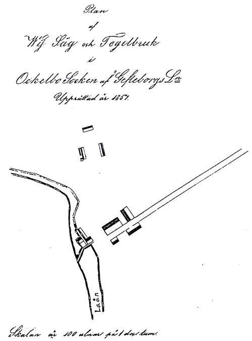

Adress Tegelbruket
Ingela Blank, dec –96
När jag flyttade till Tegelbruket, blev min nyfikenhet väckt. Namnet Tegelbruket måste ju komma från något. Jag hittade en kopia på en karta som är daterad 1857, där vårat hus är inritat. Det spelar ingen roll vart jag gräver på vår gård, så hittar jag rester efter tegel- stenar. Vad jag har hört har här legat ett tegelbruk och en ramsåg. Skylten som det står ”Tegelbruket” på, den som sitter vid OK och Idrottsplatsen, sitter alltså helt fel. Där varken finns eller har funnits ett tegelbruk. 
När man står på gårdsplanen kan man höra hur ån brusar. Jag går ner dit. Den ser inte värst inbjudande ut, det är kallt och det ligger snö på marken. Stenarna är hala och vattnet iskallt. Här har det legat ett tegelbruk och en ramsåg. Det var någon gång på 1800-talet och med lite fantasi kan jag tänka mig hur det har sett ut. Resterna efter dammen finns kvar. Det var en damm av timmer och en stensatt bro. Där satt ett stort vattenhjul, ett överfallshjul och ett underfallshjul. De försåg sågverket och bruket med den kraft som behövdes. Här fanns även lerbråken, ett kar som man mjukade upp leran i, så att den blev smidig.
Nedanför dammen fanns det ett grått timmerhus, ett ålhus, där vattnet forsade rakt igenom. Där inne satt ett galler ner till botten på ån. Det hade man för att ålarna skulle stanna kvar där, då gick det lättare att fånga dem. Det fanns tre dammluckor och öppnade man en av dem, kom vattnet rinnande till en ränna där det fanns en slipsten. ”Dit gick man och slipade knivar och saxar” talade min granne om. Den användes långt in på 30-talet. Det sägs att dammen har varit väldigt vacker. Många ungdomar drog sig dit för att svärma i månskenet. Tittar man sig runt i dag så har dammen rasat, det finns inte många spår efter det som varit. Vattenfallet har blivit mindre, beroende på att dammen har rastat.
Man kan se att de har tagit lera från åkanten. Det är ganska stora partier som har grävts ut. Det finns fortfarande mycket blålera kvar i marken, som tidigare användes till
tegelframställning.
Vid tegelbruket och sågen fanns det tre bröder: Anders, Pelle och Axel Persson som jobbade där. De kallades för Sågarpojkarna. Där fanns även en karl som kallades Wulf-Jon från Åbron. Han körde lera från Nyåbron till tegelbruken.
Han ska ha varit fruktansvärt stark. När hans häst vägrade dra det tunga lasset med lera från Nyåbron, tog han själv tag i kärran och drog den hela vägen till tegelbruket. Men hans styrka utnyttjades så till den milda grad att han fick nervöda problem. När han inte orkade med mera, gick han till Lavägen och sköt sig. Där finns det en plats efter vägen som är uppkallad efter honom, Wulf-Jonfläcken.
När nätterna var kalla och långa, drogs många luffare till tegelbruken. Även till det här bruket, där de kunde söka skydd för kylan. De kröp upp på de varma ugnarna för att sova. Ugnarna gav bra skydd mot den kalla vinden. Men när morgonen kom, blev de utkörda. Då tog sig luffarna upp till boningshuset. När ”Mor” gick ut till ladugården för att mjölka korna, passade luffarna på att smita in i huset. Man låste ju aldrig en dörr förr i tiden. När Mor kom tillbaka in i köket låg det ofta flera luffare på köksgolvet och sov. Det var inte det lättaste jobbet att få dem ur huset (det hände i huset som vi bor i nu).
Där vi idag har vår infart, stod tegellador. I dem torkade man teglet innan det skulle brännas. Man hade dem även som förvaringslokaler till teglet när det var bränt. Idag finns bara rester kvar av byggnaderna, som små mossklädda kullar. Det sägs att Wij ladugård, som byggdes 1910, är byggd av tegel som kommer från Tegelbruket i Ockelbo.